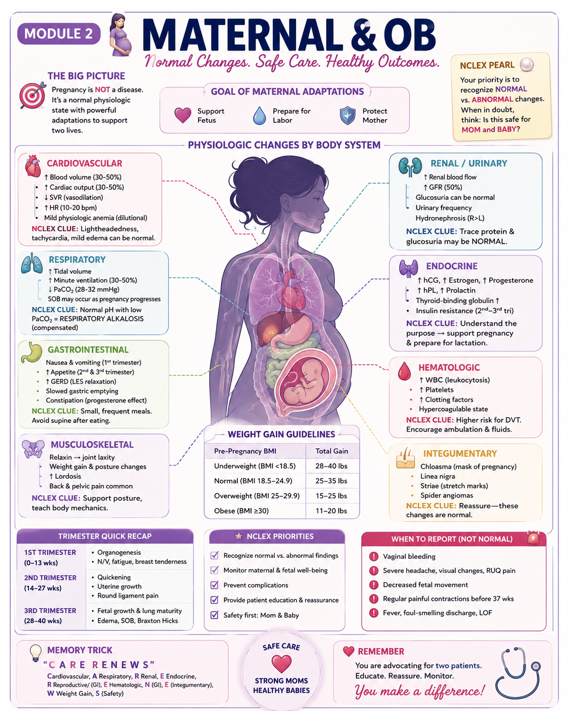

📊 Madison's Module 2 Infographic

Full study guide breakdown continues below ↓
🎯 The Big Picture
Pregnancy =
Normal physiologic state — ask "Expected or dangerous?" for every finding
Priority Order
❤️ Mom first → then fetus. A stable mom = a stable baby.
Always Ask
Keep uteroplacental perfusion adequate — left lateral position is your best friend
RH Incompatibility
The Problem
- Rh– mom + Rh+ baby = risk for hemolytic disease of the newborn
- Indirect Coombs = tests MOM (antibodies in serum)
- Direct Coombs = tests BABY (antibodies on RBCs)
When to Give RhoGAM
- ✓ At 28 weeks gestation
- ✓ Within 72 hr postpartum if baby is Rh+
- ✓ After miscarriage, abortion, ectopic pregnancy
- ✓ After amniocentesis, CVS, trauma, abdominal surgery
- ✓ External cephalic version or fetomaternal hemorrhage
NCLEX Trap!
Do NOT give RhoGAM if the mother is already sensitized (positive antibody screen). RhoGAM prevents sensitization — it cannot treat it once it has occurred.
Preeclampsia / Eclampsia / HELLP
Key Rule
All of these develop new onset after 20 weeks gestation.
Preeclampsia
- HTN ≥140/90
- Proteinuria ≥300 mg/24 hr
- May have: headache, ↑ reflexes, visual changes, RUQ pain, edema
Eclampsia
- Preeclampsia + seizures
- Most dangerous complication
- Magnesium sulfate = prevention & treatment
HELLP Syndrome
- Hemolysis
- Elevated Liver enzymes
- Low Platelets
- Emergency — may mimic GI illness
🚨 Red Flags — Report Immediately
- ! Severe headache
- ! Visual changes (blurry, spots)
- ! RUQ / epigastric pain
- ! Sudden swelling (face, hands)
- ! Hyperreflexia (clonus)
- ! Decreased urine output
Treatment Priorities
- → Magnesium sulfate — seizure prevention
- → Monitor reflexes, respirations, I&O
- → Calcium gluconate = Mag antidote (keep at bedside)
- → Seizure precautions (dim lights, quiet room, padded rails)
Fetal Heart Rate Patterns
Obstetric Emergencies
Placenta Previa
- Placenta covers the cervical os (lower uterine segment)
- Painless, bright red bleeding
- Do NOT do vaginal exam
- Notify provider — C-section likely
Placental Abruption
- Premature separation of placenta from uterine wall
- Painful, dark red bleeding
- Rigid, board-like uterus
- Fetal distress — notify provider immediately
Umbilical Cord Prolapse
- Cord descends past presenting part
- Fetal distress (cord compression)
- Knee-chest position
- Do NOT push cord back in
- Lift presenting part off cord — EMERGENCY
Uterine Rupture
- Tear in uterine wall
- Sudden, severe pain then relief
- Loss of fetal station
- Fetal distress
- Emergency surgery required
Vaccines in Pregnancy
✅ Safe (Recommended)
- ✓ Tdap (27–36 weeks)
- ✓ Influenza (injectable only)
- ✓ COVID-19
- ✓ RSV (32–36 weeks in season)
- ✓ Hepatitis B (if indicated)
💡 Most live vaccines are compatible with breastfeeding — EXCEPT Smallpox (vaccinia) and Yellow Fever (caution if infant <9 months).
❌ Not Safe (Live Vaccines)
- ✗ MMR
- ✗ Varicella (chickenpox)
- ✗ Live Influenza (FluMist)
- ✗ Zoster (Shingles)
- ✗ Oral Typhoid
⚠️ Live vaccines carry risk of fetal infection — avoid throughout pregnancy.
Prenatal Pearls
Fundal Height
- 12 wks — just above symphysis pubis
- 20 wks — at umbilicus
- 36 wks — xiphoid process
- Drops (lightening) before labor
Kick Counts
- Begin after 28 weeks
- 10 movements in 2 hours = normal
- Call provider if fewer than 10
- Assess after meals for best results
Weight Gain (Recommended)
- Underweight (<18.5): 28–40 lb
- Normal (18.5–24.9): 25–35 lb
- Overweight (25–29.9): 15–25 lb
- Obese (≥30): 11–20 lb
GTPAL — Obstetric History
GGravida
TTerm
PPreterm
AAbortion
LLiving
Example: G2 T1 P0 A0 L1 = 2 pregnancies, 1 term birth, 0 preterm, 0 abortions, 1 living child
Other Pearls
- Left lateral position — best for uteroplacental perfusion (avoids vena cava compression)
- Supine hypotension syndrome — dizziness, low BP, ↓ fetal perfusion when lying flat → turn left side
- Mild leukocytosis (↑ WBC) and dilutional anemia are normal in pregnancy
- Proteinuria is NEVER normal — always report
Labs in Pregnancy — What's Normal?
Prenatal Care Priorities (Nursing Process)
1
Assess — History, VS, fetal heart tones, fetal movement
2
Identify Problems — Risk factors, abnormal findings, danger signs
3
Plan Care — Teach, prevent complications, set goals
4
Implement — Interventions, medications, position changes
5
Evaluate Response — Is mom stable? Is baby tolerating labor?
6
Document & Communicate — SBAR to provider, escalate when needed
Safety Tip
Always assess MOM before FETUS. A stable mom = a stable baby.
Report Immediately — Not Normal!
! Vaginal bleeding
! Severe headache
! Leaking fluid
! Visual changes
! Regular contractions before 37 weeks
! RUQ / epigastric pain
! Decreased fetal movement
! Fever / chills
! Severe swelling (face, hands)
! Dizziness / syncope
⚡ NCLEX Rapid Fire — High-Yield Highlights
Leukocytosis (↑ WBC) can be NORMAL in pregnancy
Mild dilutional anemia is EXPECTED
Proteinuria is NEVER NORMAL
Pregnancy is NOT "eating for two" — only ~300 extra cal/day
Pregnancy is Hypercoagulable → DVT risk ↑
Assess Mom before Fetus. Always.
Left side improves placental perfusion
Calcium gluconate = antidote for Mag toxicity — keep at bedside
💙 Memory Trick
"MOM FIRST"
Then baby! Keep both safe.
Ready to practice? 💻
You've reviewed the content — now test yourself with 25 NCLEX-style questions.
Start Module 2 Quiz →